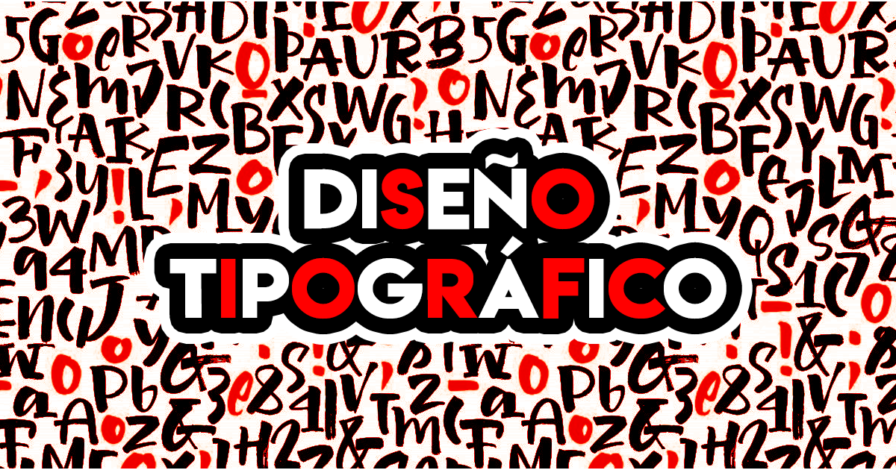
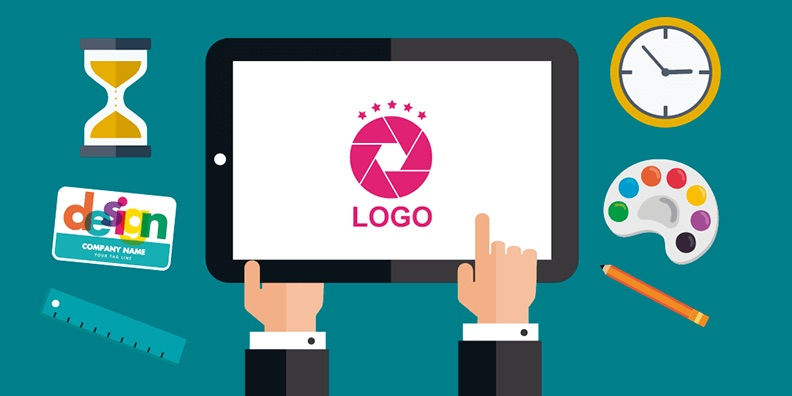

Áreas de la práctica profesional
El campo del diseño gráfico abarca varias áreas fundamentales,
cuyos límites se superponen parcialmente en la actividad profesional.
La clasificación se basa en la noción de que cada una de las áreas requiere una preparación
y un talento especial o asesoramiento especial de acuerdo a la complejidad del proyecto.
Diseño para información
Incluye el diseño editorial. Generalmente estos productos se clasifican de acuerdo al tamaño de
información que disponen en carteles, flyers o volantes, libros, periódicos, revistas, catálogos, CD, DVD, etc. Además abarca la señalética,
que incluye señales de peligro, señales de tráfico, señales de banderas marítimas, señales de ferrocarril,
entre otras. Los folletos se clasifican de acuerdo a su número de páginas y pueden ser dípticos (dos páginas), trípticos (tres páginas), etc.
También se los divide
Diseño para persuasión
Es el diseño de comunicación destinado a influir sobre la conducta del público. Incluye la publicidad y la propaganda.
Además entran en esta clasificación la identidad corporativa que comprende marcas, iso-logotipo, papelería comercial y fiscal,
billetes, aplicación de marca en arquigrafía e indumentaria, gráfica vehicular; las etiquetas, las cuales pueden ser frontales,
colgantes, de seguridad, envolventes, etc.; y los envases, los más comunes son los rígidos, semirrígidos, flexibles y las latas.
Diseño para educación
Incluye el material didáctico como los manuales instructivos,
indicaciones de uso, fichas didácticas educacionales, etcétera.
También entran la cartelería de seguridad industrial y señalización de espacios de trabajo.
Diseño para administración
Comprende el diseño de formularios, señalética urbana, billetes, sellos postales,
pagarés y en general, cualquier pieza que sea susceptible de falsificación.
Diseño tipográfico
Elaboración de diferentes tipos sans serif o palo seco, con serif,
gestuales, góticas, caligráficas, de fantasía o cualquier tipografía.

Diseño de Logotipos (Branding)
Comprende el diseño del logo e imagen corporativa de una empresa,
producto, evento, etc., con base en una temática en concreto.

Diseño de interfaces
También denominado diseño de instrumentos de mandos,
se encarga de la elaboración de interfaces para diferentes
dispositivos como pantallas de relojes digitales, de teléfonos móviles,
de cámaras digitales, y otros aparatos. El aspecto visual es la primera
impresión que un usuario percibe de un sitio; una apariencia atractiva y
funcional es la mejor carta de presentación con la que cuenta un diseñador
gráfico para promover credibilidad y confianza en el sitio que diseñó y
motivar al usuario a continuar con la exploración de los contenidos.
En esta perspectiva, la interfaz gráfica se concibe como una dimensión
cuya función es articular la comunicación entre personas y tecnologías para
facilitar el acceso a la información y propiciar el aprendizaje significativo.
Diseño gráfico digital
La Web, las redes sociales y los medios digitales son los nuevos soportes
del denominado diseño gráfico digital, un diseño gráfico cuyo destino ha dejado
de ser el papel y ha pasado a ser la pantalla de un ordenador o de múltiples dispositivos.
Un ejemplo de piezas de diseño gráfico digital son los banners publicitarios,
los logotipos responsive o los gráficos en redes sociales para campañas de marketing digital.
Diseño visual
Consiste en la creación de imágenes funcionales con fines netamente comunicacionales,
para esto se hace uso de las nuevas tecnologías para un desarrollo más estructurado.
Estudia la edad y producción de la imagen fija, móvil, ambiental y digital, a partir de
las estructuras de los lenguajes que operan, circulan y funcionan en la sociedad,
con el objeto de entender la interactividad de los dispositivos y los datos con el espectador.
Así mismo, define los métodos para verificar, de forma experimental, la eficacia comunicativa
de estos datos, con el propósito de reducir la entropía cognitiva. El diseño visual crea
estructuras de comunicación e información visual, soportado por elementos estructurales del
diseño y formales de los modelos de información y comunicación.